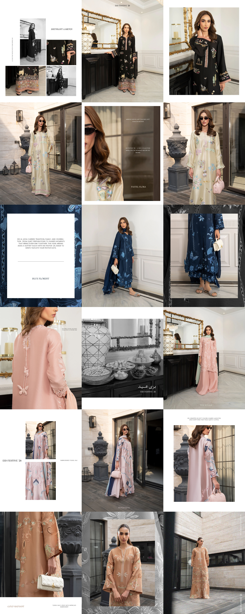

Meraki
Meraki needed social media campaigns that could make seasonal and event-based moments such as Eid and Mother’s Day work for an elite, modern fashionwear audience. I developed the social media strategies and content around these occasions to reach a specific niche audience in volume while keeping the brand’s premium identity intact.
Social Media Posts
GIFs
Layouts

